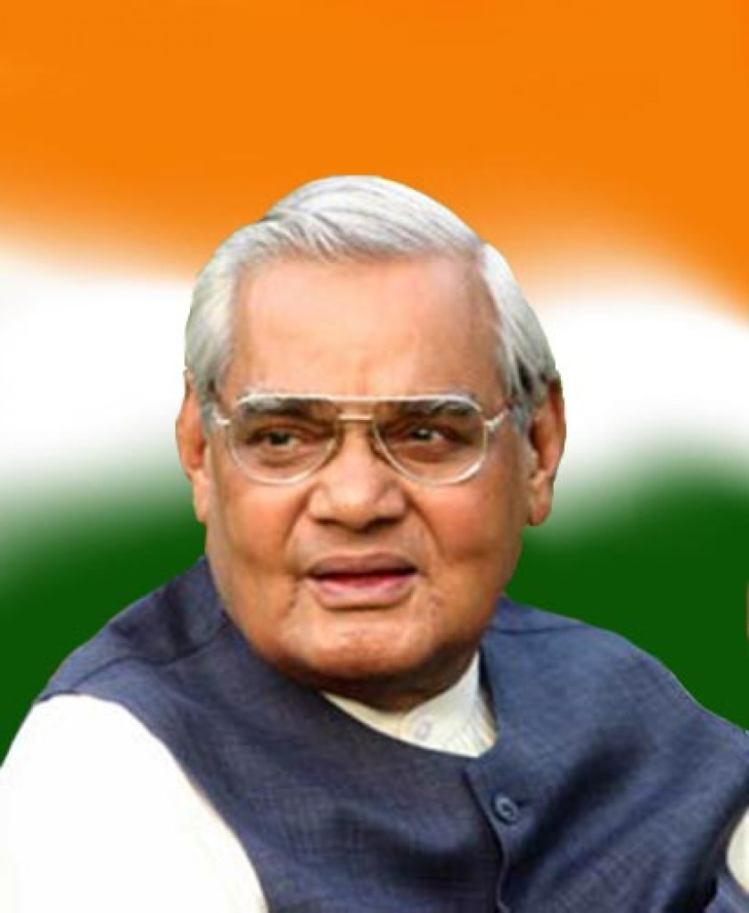
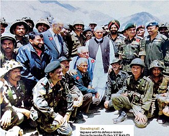

 Atal Bihari Vajpayee ( 25 December 1924 – 16 August 2018) was an Indian politician and poet who served three terms as the 10th Prime Minister of India, first for a term of 13 days in 1996, then for a period of 13 months from 1998 to 1999, followed by a full term from 1999 to 2004.He was the first non-Congress prime minister to serve a full term in the office. Vajpayee was one of the co-founders and a senior leader of the Bharatiya Janata Party. He was a member of the RSS, a Hindu nationalist volunteer organisation. He was also a Hindi poet and a writer. He was a member of the Indian Parliament for over five decades, having been elected ten times to the Lok Sabha, the lower house, and twice to the Rajya Sabha, the upper house. He served as the Member of Parliament from the Lucknow constituency, retiring from active politics in 2009 due to health concerns. He was among the founding members of the Bharatiya Jana Sangh, of which he was president from 1968 to 1972. The BJS merged with several other parties to form the Janata Party, which won the 1977 general election. In March 1977, Vajpayee became the Minister of External Affairs in the cabinet of Prime Minister, Morarji Desai. He resigned in 1979, and the Janata alliance collapsed soon after. Former members of the Bharatiya Jana Sangh formed the Bharatiya Janata Party in 1980, with Vajpayee its first president. During his tenure as prime minister, India carried out the Pokhran-II nuclear tests in 1998. Vajpayee sought to improve diplomatic relations with Pakistan, travelling to Lahore by bus to meet with Prime Minister, Nawaz Sharif. After the 1999 Kargil War with Pakistan, he sought to restore relations through engagement with President Pervez Musharraf, inviting him to India for a summit at Agra. Vajpayee's government introduced many domestic economic and infrastructural reforms, including encouraging the private sector and foreign investments, reducing governmental waste, encouraging research and development and privatisation of some government owned corporations. During his tenure, India's security was threatened by a number of violent incidents including 2001 Indian Parliament attack and 2002 Gujarat riots which ultimately caused his defeat in 2004 general election.
His activism started in Gwalior with Arya Kumar Sabha, the youth wing of the Arya Samaj movement, of which he became the general secretary in 1944. He also joined the Rashtriya Swayamsevak Sangh (RSS) in 1939 as a swayamsevak, or volunteer. Influenced by Babasaheb Apte, he attended the Officers Training Camp of the RSS during 1940 to 1944, becoming a pracharak (RSS terminology for a full-time worker) in 1947. He gave up studying law due to the partition riots. He was sent to Uttar Pradesh as a vistarak (a probationary pracharak) and soon began working for the newspapers of Deendayal Upadhyaya: Rashtradharma (a Hindi monthly), Panchjanya (a Hindi weekly), and the dailies Swadesh and VEER ARJUN.
By 1942, at the age of 16 years, Vajpayee became an active member of the Rashtriya Swayamsevak Sangh (RSS). Although the RSS had chosen not to participate in the Quit India Movement, in August 1942, Vajpayee and his elder brother Prem were arrested for 24 days during the Quit India Movement. He was released after giving a written statement that while he was a part of the crowd, he did not participate in the militant events in Bateshwar on 27 August 1942. Throughout his life, including after he became prime minister, Vajpayee has labelled the allegation of participation in the Quit India Movement to be a false rumour.
In 1951, Vajpayee was seconded by the RSS, along with Deendayal Upadhyaya, to work for the newly formed Bharatiya Jana Sangh, a Hindu right-wing political party associated with the RSS. He was appointed as a national secretary of the party in charge of the Northern region, based in Delhi. He soon became a follower and aide of party leader Syama Prasad Mukherjee. In the 1957 Indian general election, Vajpayee contested elections to the Lok Sabha, the lower house of the Indian Parliament. He lost to Raja Mahendra Pratap in Mathura, but was elected from Balrampur.
He was influenced by Jawaharlal Nehru to the extent that he mirrored his style, diction, and tone of his speeches. Nehru's influence was also evident in Vajpayee's leadership. In the Lok Sabha his oratorial skills so impressed Prime Minister Nehru that he predicted that Vajpayee would someday become the prime minister of India. On the occasion of Nehru's death on 27 May 1964, Vajpayee termed him as "the orchestrator of the impossible and inconceivable" and likened him to Hindu god Rama.
Vajpayee's oratorial skills won him the reputation of being the most eloquent defender of the Jana Sangh's policies. After the death of Upadhyaya, the leadership of the Jana Sangh passed to Vajpayee.[22] He became the national president of the Jana Sangh in 1968,[23] running the party along with Nanaji Deshmukh, Balraj Madhok and L. K. Advani.
During a BJP conference in Mumbai in November 1995, BJP President Advani declared that Vajpayee would be the party's prime ministerial candidate in the forthcoming elections. Vajpayee himself was reported to be unhappy with the announcement, responding by saying that the party needed to win the election first.The BJP became the single largest party in Parliament in the 1996 general election, helped by religious polarisation across the country as a result of the demolition of the Babri Masjid. Indian president Shankar Dayal Sharma invited Vajpayee to form the government. Vajpayee was sworn in as the 10th prime minister of India, but the BJP failed to muster a majority among members of the Lok Sabha. Vajpayee resigned after 16 days, when it became clear that he did not have enough support to form a government.In this short period, he also created and administered the Ministry of Consumer Affairs, Food and Public Distribution.
In May 1999 some Kashmiri shepherds discovered the presence of militants and non-uniformed Pakistani soldiers (many with official identifications and Pakistan Army's custom weaponry) in the Kashmir Valley, where they had taken control of border hilltops and unmanned border posts. The incursion was centred around the town of Kargil, but also included the Batalik and Akhnoor sectors and artillery exchanges at the Siachen Glacier.
The Indian army responded with Operation Vijay, which launched on 26 May 1999. This saw the Indian military fighting thousands of militants and soldiers in the midst of heavy artillery shelling and while facing extremely cold weather, snow and treacherous terrain at the high altitude. Over 500 Indian soldiers were killed in the three-month-long Kargil War, and it is estimated around 600 – 4,000 Pakistani militants and soldiers died as well.India pushed back the Pakistani militants and Northern Light Infantry soldiers. Almost 70% of the territory was recaptured by India. Vajpayee sent a "secret letter" to U.S. President Bill Clinton that if Pakistani infiltrators did not withdraw from the Indian territory, "we will get them out, one way or the other" - meaning he did not rule out crossing the Line of Control (LoC), or was the use of nuclear weapons.
After Pakistan suffered heavy losses, and with both the United States and China refusing to condone the incursion or threaten India to stop its military operations, General Pervez Musharraf was recalcitrant and Nawaz Sharif asked the remaining militants to stop and withdraw to positions along the LoC.The militants were not willing to accept orders from Sharif but the NLI soldiers withdrew.The militants were killed by the Indian army or forced to withdraw in skirmishes which continued even after the announcement of withdrawal by Pakistan.
भारत जमीन का टुकड़ा नहीं,
जीता जागता राष्ट्रपुरुष है।
हिमालय मस्तक है, कश्मीर किरीट है,
पंजाब और बंगाल दो विशाल कंधे हैं।
पूर्वी और पश्चिमी घाट दो विशाल जंघायें हैं।
कन्याकुमारी इसके चरण हैं, सागर इसके पग पखारता है।
यह चन्दन की भूमि है, अभिनन्दन की भूमि है,
यह तर्पण की भूमि है, यह अर्पण की भूमि है।
इसका कंकर-कंकर शंकर है,
इसका बिन्दु-बिन्दु गंगाजल है।
हम जियेंगे तो इसके लिये
मरेंगे तो इसके लिये।